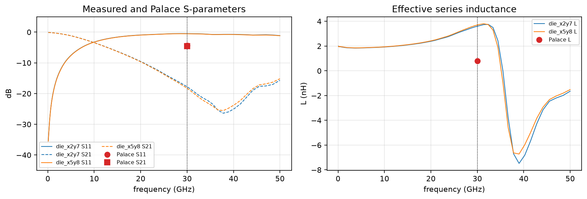

IHP SG13G2 Octagon L2n0 — 30 GHz validation
Palace/gsim vs IHP THRU-de-embedded measured S-parameters for the
2-turn, nominal 2 nH benchmark. Layout and measured data are pinned from
IHP-Open-PDK commit 9439837 (Apache-2.0).

30 GHz comparison
| case | |S11| dB | |S21| dB | L nH | Q |
|---|---|---|---|---|
| palace | -4.36 | -4.53 | 0.800 | -0.86 |
| die_x2y7 | -0.49 | -17.79 | 3.607 | -1.44 |
| die_x5y8 | -0.54 | -18.29 | 3.711 | -1.32 |
The effective L/Q uses the documented series 2-port extraction Z = 2 Z0 (1-S21)/S21. At 30 GHz the benchmark is above its measured SRF (~25.5 GHz), so the S-parameters are the primary comparison.
Notebook: rendered notebook · executed .ipynb
Model and source
Palace model: authoritative IHP SG13G2 stack, TopMetal2 winding, TopMetal1 feeds/underpass, SUBGND reference plane, 5 µm refined / 70 µm maximum mesh, two interlayer ports SUBGND → TopMetal1 at 50 Ω. The notebook records the IHP openEMS settings and the measured-data fallback required by the validation plan.